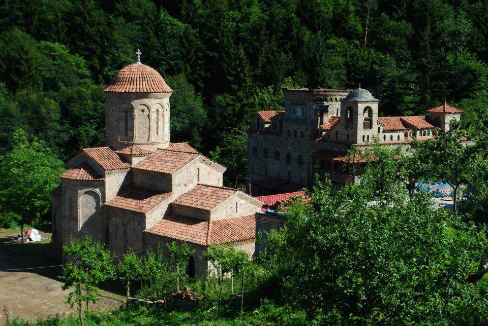

| სოფელი ბერეთისა - ჭიათურის მუნიციპალიტეტში მდებარეობს. ზღვის დონიდან 840 მეტრში,ჭიათურის რაიონული ცენტრიდან 24 კილომეტრში. სოფლელში არის საშუალო სკოლა, საფეხბურთო მოედანი. სოფლელში მდებარეობს რამოდენიმე ეკლესია. რომელთაგან ერტი არის XIX საუკუნის ეკლესია. | ღირსშესანიშნაობები |
|
 რუკა |
 სოფელი ბერეთისა |
|
 მდინარე |
||
| ყველა უფლება დაცულია | ||